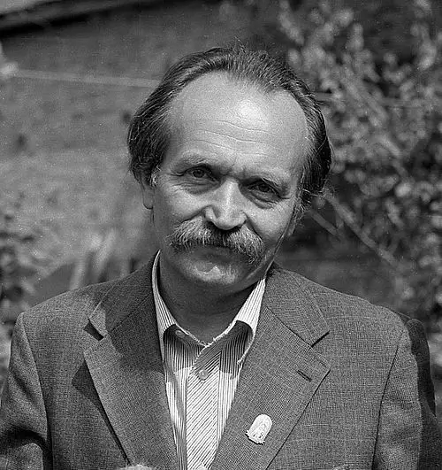

Вячеслав Максимович Черновол

- Вячеслав Максимович Черновол
- Український політик, громадський діяч, публіцист, літературний критик, народний депутат України I—III скликань (1990—1999), діяч руху опору проти зросійщення та національної дискримінації українського народу, політичний в'язень СРСР. Провідник українського національно-демократичного визвольного руху кінця 80-х — 90-х років; другий голова Народного руху України (1992—1999). Герой України (2000, посмертно), кавалер ордена князя Ярослава Мудрого V ступеня, лауреат Міжнародної журналістської премії імені Ніколаса Томаліна (1975) та Національної премії імені Тараса Шевченка (1997).